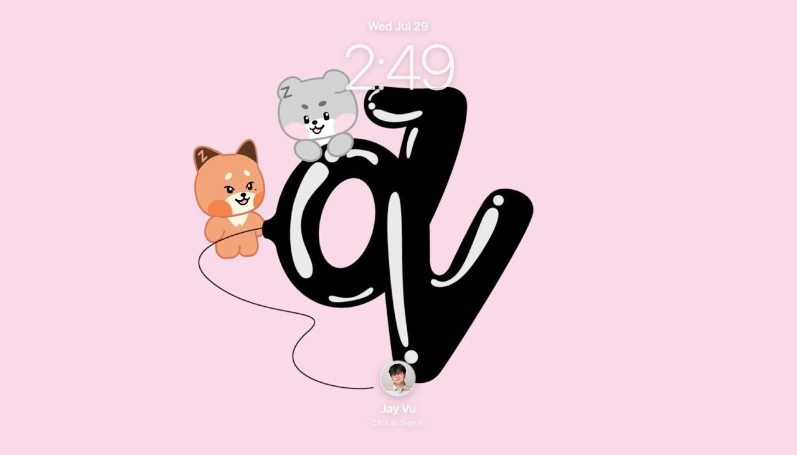
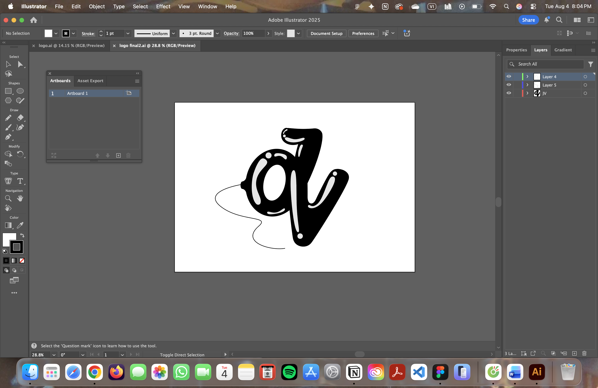
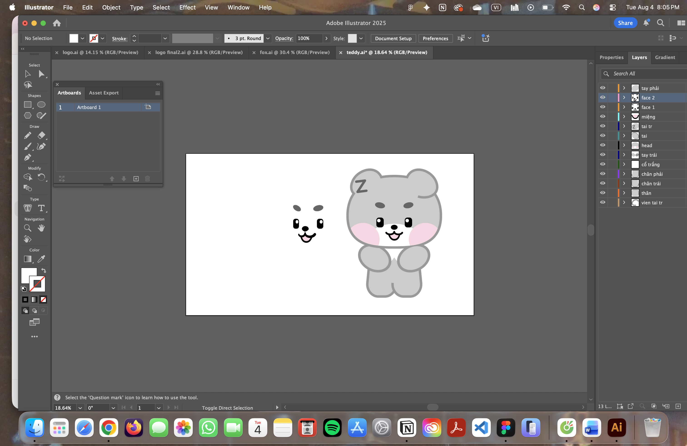
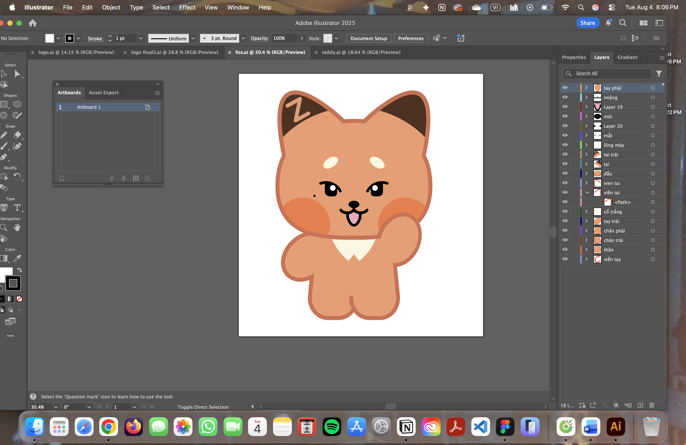
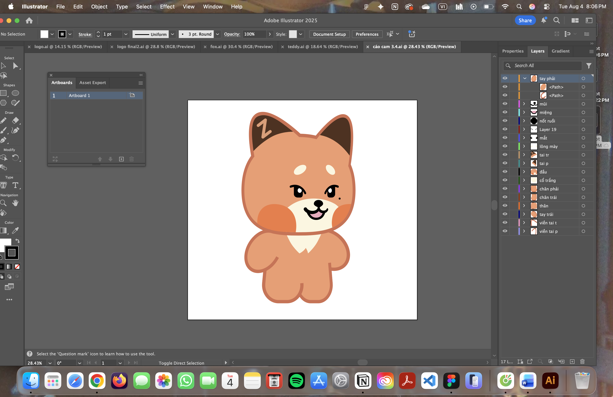

MOTION
BRINGING MY BRAND TO LIFE
A playful motion identity project that turns my static portfolio logo into a short animated story filled with personality.
PROJECT OVERVIEW
A LITTLE MORE PERSONALITY, RIGHT FROM THE START.
I created this motion intro as a personal project for my portfolio. After receiving feedback that my portfolio should show more of my personality, I wanted to turn my static logo into something more playful, energetic, and memorable.
Instead of simply displaying the logo, I used motion to introduce the characters behind it and create a short moment that feels more like me.
WHY THESE CHARACTERS?
MORE THAN THEIR STEREOTYPES
My logo features a fox and a bear, two animals that are often associated with being cunning, dangerous, or intimidating.
I wanted to show a softer and more playful side of them instead. That idea also reflects something I value personally: understanding people through my own experiences with them instead of judging them based on assumptions.
CHARACTER & LOGO DEVELOPMENT
SHAPING THE IDENTITY FOR MOTION
Before animating the intro, I refined the logo and developed different versions of the mascots so they could work naturally in motion.




BUILDING THE MOTION STORY
FROM LOGO TO LITTLE STORY
Rather than making the logo simply fade onto the screen, I wanted the intro to feel like a tiny story.
The fox first appears with a quick “hello,” then disappears before returning as the animation begins to build. A bouncing ball introduces the logo, the bear rises into the scene, and the fox jumps onto the mark. The final details complete the logo and bring the full identity together.
Each movement was designed to make the characters feel playful and give the portfolio an energetic first impression.
- 01Fox appears
- 02The “HELLO” moment
- 03Fox disappears
- 04Fox returns
- 05A ball drops and bounces
- 06The logo appears
- 07The bear rises
- 08The fox jumps onto the logo
- 09Final details complete the identity
FINAL INTRO
ONE INTRO, TWO SCREENS
I created separate versions of the intro so the experience could work naturally across different screen sizes while keeping the same characters, personality, and motion language.